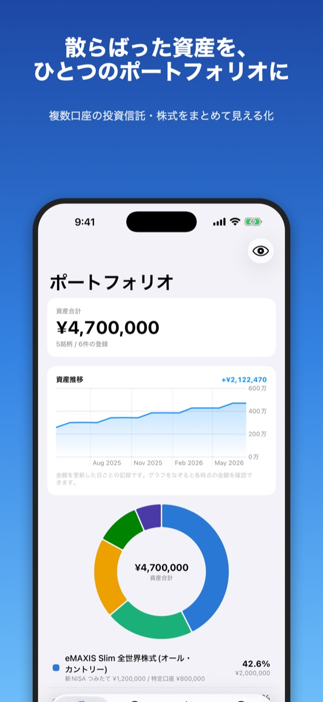
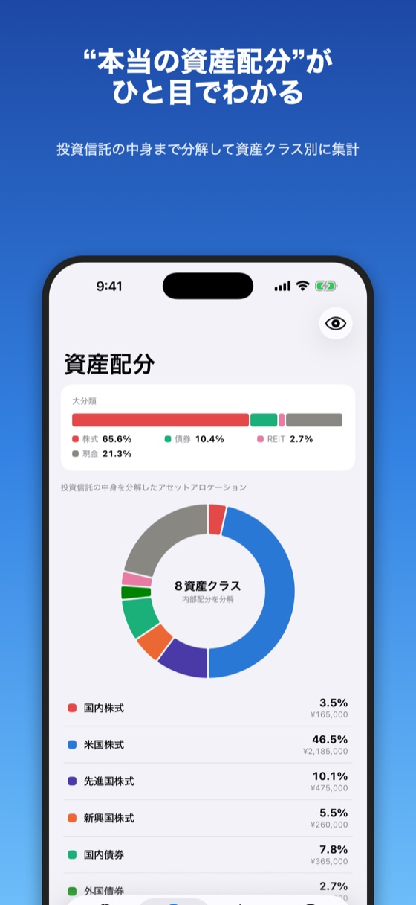

アセロケ
複数の口座に分かれた投資信託・株式をまとめて、"本当の資産配分"を見える化するiPhoneアプリです。登録は家計簿アプリのスクリーンショットを取り込むだけ。ログイン不要・口座連携なしで、データはすべて端末内にのみ保存されます。


よくある質問
- データはどこに保存されますか?
- すべてお使いの端末の中にのみ保存されます。ログインや口座連携は不要で、入力内容やスクリーンショットが外部に送信されることはありません。
- スクリーンショットがうまく読み取れません。
- 読み取りは完璧ではなく、画像によっては読み取れない・誤って読み取ることがあります。取り込み画面で内容を確認・修正のうえ登録してください。読み取れなかった商品は、検索または手動追加でも登録できます。
- 機種変更時にデータを引き継げますか?
- 入力タブの「バックアップ書き出し」でJSONファイルとして保存し、新しい端末の「復元」から読み込んでください。
- 購入したProを復元したい。
- Proの案内画面にある「購入を復元する」をタップしてください。同じApple IDであれば引き継がれます。
お問い合わせ
ご質問・不具合のご報告はメールでお寄せください。
メールで問い合わせる